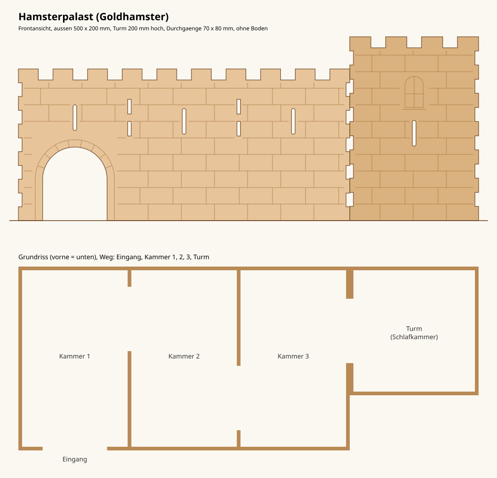

Hamsterpalast
Mehrkammerhaus als Burg zum Lasern: Haupthaus mit drei Kammern und ein Turm als Schlafkammer, ohne Boden, Deckel abnehmbar. Alles aus 4 mm Sperrholz.
Ziehen: drehen · Rad/Pinch: zoomen · Rechts ziehen: verschieben
Dateien
| rot | schneiden |
| blau | ritzen/gravieren, schwach und schnell |
| grün | nur Beschriftung, in der Lasersoftware ausschalten |
Vor dem Schneiden Materialstärke messen und mit den drei Probe-Teilen die Passung prüfen.
Andere Stärke, Schnittbreite oder Plattengröße: Parameter oben in
hamsterpalast.py ändern und neu erzeugen. Details im
Repository.
Ansicht und Grundriss
